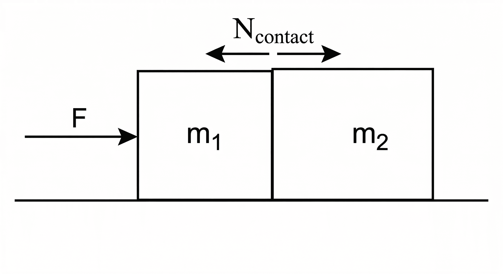
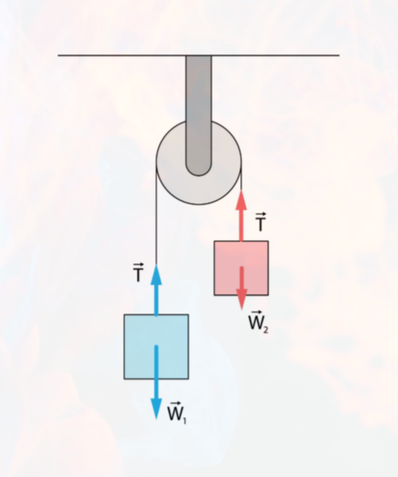
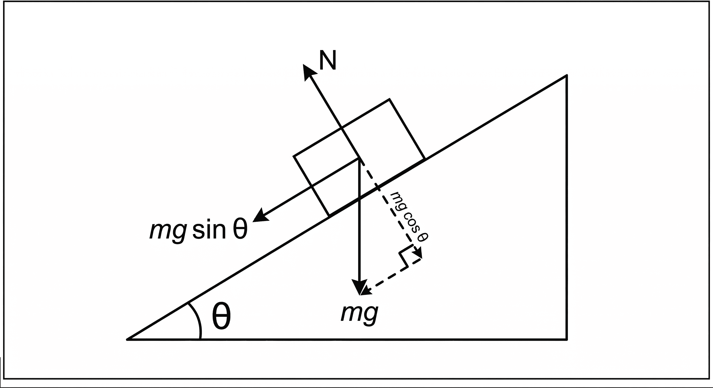
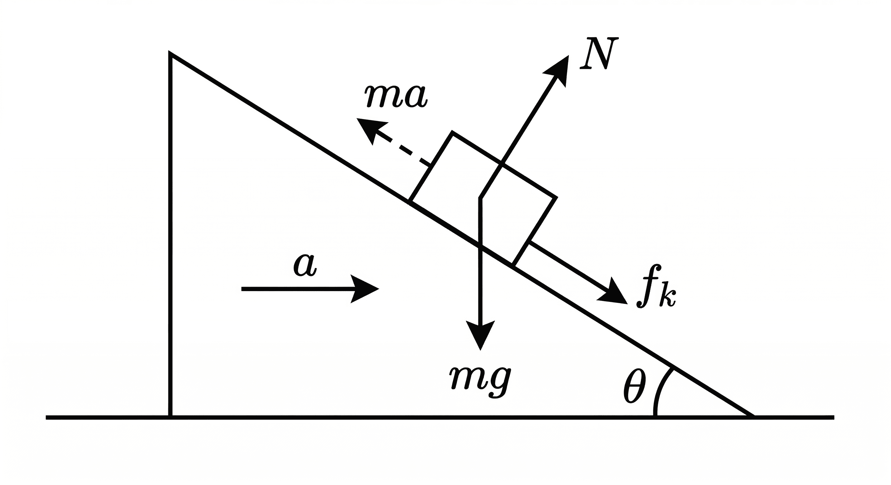

A body continues in its state of rest or uniform motion in a straight line unless acted upon by a net external force.
$$\vec{F}_{net} = m\vec{a} = \frac{d\vec{p}}{dt}$$
For every action there is an equal and opposite reaction. Action-reaction pairs act on different bodies — they never cancel each other.
Isolate each body. Draw all forces acting on it: weight $mg$ downward, normal $N$ perpendicular to surface, tension $T$ along string away from body, applied forces and friction.

$$a = \frac{F}{m_1+m_2}, \qquad N_{contact} = \frac{m_2 F}{m_1+m_2}$$

Masses $m_1 > m_2$ over a frictionless pulley:
$$a = \frac{(m_1-m_2)g}{m_1+m_2}, \qquad T = \frac{2m_1 m_2 g}{m_1+m_2}$$

$$a = g\sin\theta, \qquad N = mg\cos\theta$$
$m_1$ on table, $m_2$ hanging:
$$a = \frac{m_2 g}{m_1+m_2}, \qquad T = \frac{m_1 m_2 g}{m_1+m_2}$$

A block of mass $m$ on a frictionless wedge of angle $\theta$, wedge accelerating at $a_0$ on a smooth floor.
From ground frame (inertial):
$$N\sin\theta = ma_{block,x}, \qquad N\cos\theta - mg = 0 \text{ (if no vertical acc.)}$$
From wedge frame (non-inertial) — add pseudo force $ma_0$ backward on block:
Along incline: $mg\sin\theta - ma_0\cos\theta = ma_{rel}$
Perpendicular to incline: $N = mg\cos\theta + ma_0\sin\theta$
If block stays stationary relative to wedge (they move together):
$$a_0 = g\tan\theta, \qquad N = \frac{mg}{\cos\theta}$$
In a frame accelerating at $\vec{a}_0$, apply pseudo force $= -m\vec{a}_0$ on every body.
| Situation | Apparent Weight |
|---|---|
| Lift accelerating up | $m(g+a)$ |
| Lift accelerating down | $m(g-a)$ |
| Free fall | $0$ |
| Constant velocity | $mg$ |
For a system of particles with total mass $M$:
$$\vec{F}_{ext} = M\vec{a}_{CM}$$
The centre of mass accelerates as if all external forces act on it. Internal forces cancel in pairs.
The safest approach for JEE — always start from first principles:
$F_{ext} = \frac{dp}{dt} = \frac{d(Mv)}{dt}$
The general form depends on whether mass is entering or leaving the system:
| Case | Equation |
|---|---|
| Mass leaving (rocket, chain) | $F_{ext} = M\dfrac{dv}{dt} - v_{rel}\dfrac{dM}{dt}$ |
| Mass entering (sand on belt) | $F_{ext} = M\dfrac{dv}{dt} + v_{rel}\dfrac{dM}{dt}$ |
| System | Key relation |
|---|---|
| Sand falling on conveyor belt | Force to maintain speed: $F = v\dfrac{dm}{dt}$ |
| Chain falling off table | At length $x$ hanging: $F_{net} = \lambda xg$, where $\lambda$ = mass/length |
| Rocket equation | $F_{thrust} = v_{exhaust}\dfrac{dM}{dt}$, $v = u\ln(M_0/M)$ |
$$\vec{J} = \vec{F}\cdot\Delta t = \Delta\vec{p}$$
For inextensible strings, total string length is constant. Differentiate to relate accelerations.
Equilibrium: $\sum\vec{F} = 0$. For 3 concurrent forces:
$$\frac{F_1}{\sin\alpha} = \frac{F_2}{\sin\beta} = \frac{F_3}{\sin\gamma}$$
| Concept | Formula |
|---|---|
| Newton's 2nd law | $F = ma = dp/dt$ |
| Impulse | $J = F\Delta t = \Delta p$ |
| Atwood acceleration | $(m_1-m_2)g/(m_1+m_2)$ |
| Atwood tension | $2m_1m_2g/(m_1+m_2)$ |
| Incline (no friction) | $a=g\sin\theta$, $N=mg\cos\theta$ |
| Wedge (block stationary on it) | $a_0 = g\tan\theta$ |
| Lift apparent weight (up) | $m(g+a)$ |
| Lift apparent weight (down) | $m(g-a)$ |
| System of particles | $F_{ext} = Ma_{CM}$ |
| Rocket thrust | $v_{exhaust}\cdot dM/dt$ |
| Recoil / explosion | $\sum p = 0$ (if $F_{ext}=0$) |
| Lami's theorem | $F_1/\sin\alpha = F_2/\sin\beta = F_3/\sin\gamma$ |